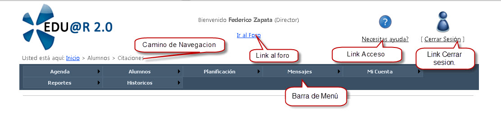
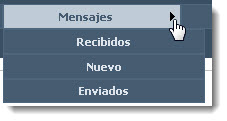
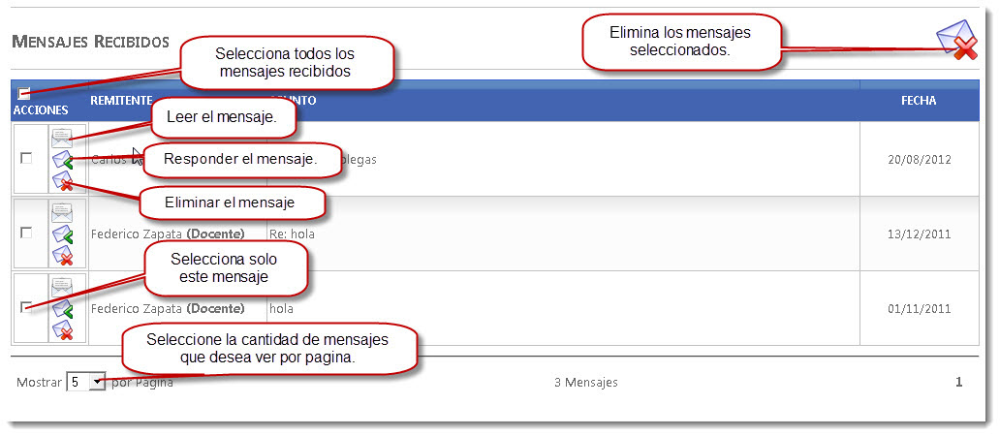
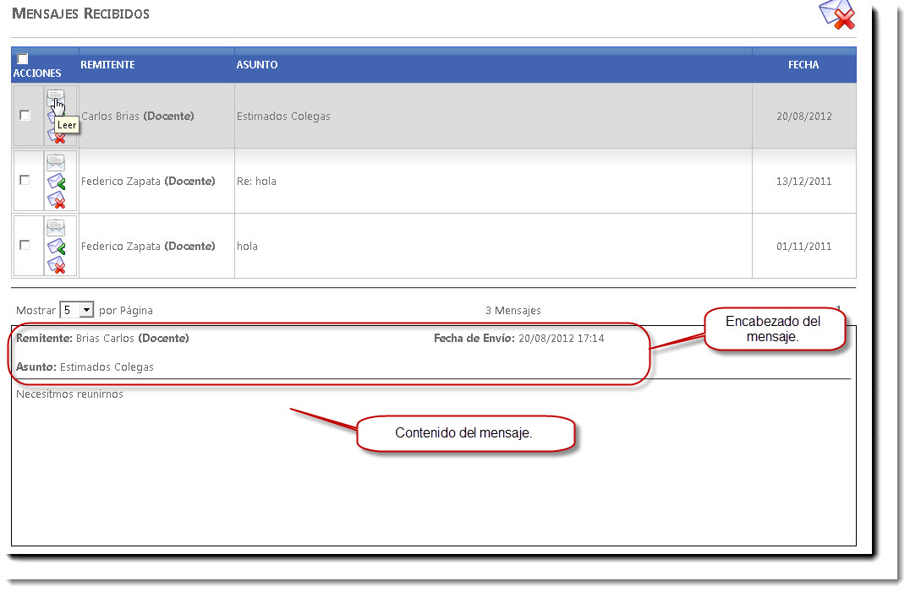
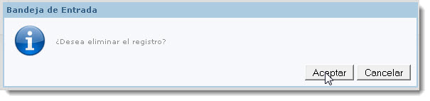
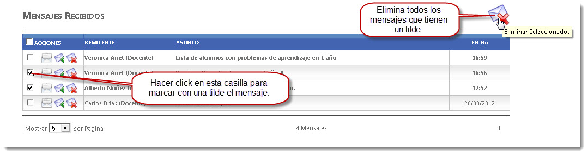
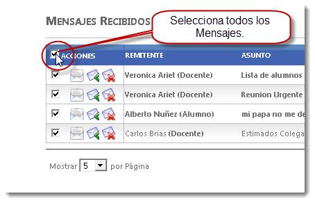
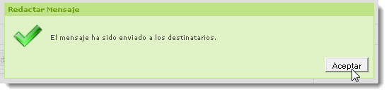

Presentación
Eduar 2.0 gestiona el sistema con diferentes perfiles según el rol de los vinculados a la entidad educativa. El Perfil Administrador tiene acceso a la mayoría de las funcionalidades del sistema a diferencia del resto de los perfiles que están mas restringidos en su accesos.
El administrador es el único usuario que puede crear nuevos perfiles, y registrar nuevos usuarios asignándole un perfil.
Puede conocer en nivel de acceso al sistema generando reportes como por ejemplo Reportes que reflejen que pagina fue el más accedido y por cual perfil.
Elementos Básicos

Camino de Navegación: Aquí muestra el camino de navegación, según el esquema de árbol, a la página que esta ubicado.
Barra de Menús: En este sector de la página se encuentra las diferentes opciones que el usuario puede elegir para acceder a determinada información que se mostrara en el contenido de la página.
La información se organiza siguiendo el principio de árbol, esto quiere decir que un menú puede tener menús hijos y menús padres.
Los menús hijos se despliegan en una serie de opciones, que al seleccionarla opción ingresara a una nueva pagina.
Cerrar sesión: hacer click en cerrar sesión para darle fin a su sesión en el sistema.
Link de Ayuda: al ingresar en este link accederá con información de un manual de usuario online.
Cuenta
En la opción cuenta del menú, usted tendrá la posibilidad de actualizar o simplemente cambiar los datos asociados a su cuenta.
Eduar 2.0 le da la posibilidad de modificar los siguientes datos para mantener actualizada su cuenta: Contraseña, Email, Pregunta secreta.
Al posicionar el cursor del mouse se despliega las opciones de la cuenta a modificar.

Como cambiar la pregunta secreta
La pregunta secreta es usada para validar que un usuario pueda cambiar su contraseña en caso de olvido. Por esto es importante que recuerde la respuesta registrada a su pregunta secreta.
Para cambiar contraseña debe dirigirse a la barra de menú posicionarse en la opción de “Mi Cuenta”. Allí se despliega las opciones del menú de “Mi Cuenta”, hacer click en “Pregunta Secreta”. Al ingresar en esta opción se habré una pantalla Modificar Pregunta Secreta, como se muestra a continuación.

Ingresar la nueva pregunta secreta, luego ingrese la respuesta correspondiente a la pregunta. Confirme el cambio de la Pregunta Secreta seleccionando el botón “Cambiar Pregunta”.
Como cambiar mi contraseña
La contraseña es una forma de autentificar qué persona esta usando el sistema. Todos los usuarios del sistema necesitan una contraseña para ingresar al sistema. Para cambiar contraseña debe dirigirse a la barra de menú posicionarse en la opción de “Cuenta”. Allí se despliega las opciones del menú de “Cuenta”, hacer click en “Contraseña”. Al ingresar en esta opción se habré una pantalla Modificar Contraseña, como se muestra a continuación.

Ingrese la nueva contraseña, recuerde que la misma debe ser alfanumérica, mas de 5 caracteres. Repita la contraseña para confirmar la misma.
Luego de completar los datos requeridos, seleccione el botón Cambiar contraseña.
Seleccione el botón cancelar en caso que desee salir, no se guardara ningún cambio al seleccionar cancelar.
Como cambiar la dirrecion de email
El email asociado a esta cuenta es usado por Edu@r2.0 para enviar notificaciones o solicitudes por cambio de contraseña, etc.
Para cambiar contraseña debe dirigirse a la barra de menú posicionarse en la opción de “Mi Cuenta”. Allí se despliega las opciones del menú de “Cuenta”, hacer click en “Email”. Al ingresar en esta opción se habré una pantalla Modificar Email, como se muestra a continuación.

Ingrese su correo electrónico, como por ejemplo xxxxx@hotmail.com. Luego confirme el cambio seleccionando el botón “Cambiar Email”. De esta manera se guardara esta dirección de email para enviar información del sistema Edu@r.
Mensajes
Edu@r 2.0 ofrece un servicio de mensajería para que todos los usuarios cuenten con un nuevo medio para comunicarse, que les permite enviar y recibir mensajes. Cada usuario tiene una bandeja de mensajes donde se muestran todos los mensajes recibidos con su fecha de ingreso y remitente. También cuenta una bandeja de mensaje enviados donde muestra la fecha de envió y su destinatario.

Bandejas de Mensajes Recibidos y Enviados
Edu@r 2.0 cuenta con dos Bandejas de Mensajes donde se almacenas los mensajes.
En la Bandeja de Mensajes Recibidos encontramos todos los mensajes de entrada que tiene como destino nuestro usuario. Para ingresar a la bandeja de mensaje recibidos debe dirigirse a la barra de menú, posicionarse en Mensaje. Al desplegarse las opciones de mensaje, seleccione Recibidos.
En la Bandeja de Mensajes Enviados encontramos todos los mensajes de Salida que tiene como Remitente nuestro usuario. Para ingresar a la bandeja de mensaje enviados debe dirigirse a la barra de menú, posicionarse en Mensaje. Al desplegarse las opciones de mensaje, seleccione Enviados.
Al hacer click en alguna de las Bandejas se abre una nueva pantalla con una apariencia como se muestra a continuación:

En esta pantalla muestra la bandeja de entrada de los mensajes. Enlistando todos los mensajes recibidos. Por cada mensaje muestra el encabezado con los siguientes datos Remitente, Asunto, Fecha.
 Leer un mensaje: al seleccionar leer mensaje se muestra al debajo de la bandeja de Recibidos el Mensaje seleccionado. En donde muestra los datos de mensaje en el encabezado y debajo de él contenido del mensaje. Como se muestra a continuación:
Leer un mensaje: al seleccionar leer mensaje se muestra al debajo de la bandeja de Recibidos el Mensaje seleccionado. En donde muestra los datos de mensaje en el encabezado y debajo de él contenido del mensaje. Como se muestra a continuación:


Responder un mensaje: Al seleccionar responder mensaje se abre una nueva ventana con un encabezado que considera al destinatario a la usuario que le envío el mensaje y mantiene el asunto del mensaje original (este ultimo campo es editable). Y en el contenido del mensaje tiene una sesión que muestra mensaje original y otra sesión el mensaje a redactar la respuesta al mensaje original. A continuación muestra la pantalla de Responder mensaje:


Eliminación de Mensajes: Al hacer click en Eliminar aparece una ventana preguntando si desea eliminar el registro. En la misma ventana dos botones uno para aceptar la eliminación de este mensaje y otro para cancelar la eliminación.

Al hacer click en aceptar se elimina de la lista de mensajes recibidos.
Si se desea borrar más de un mensaje de la bandeja al mismo tiempo debe tildar la casilla del lado izquierdo de los mensajes que desee eliminar .Al terminar de tildar los mensajes, hacer click en el botón Eliminar Seleccionados que se encuentra en la parte superior derecha de la bandeja de recibidos.

En el encabezado de la bandeja de mensajes Recibidos observamos que en la columna de Acción aparece una casilla que nos permite tildar. En caso de tildar esta casilla automáticamente se tildan todos los mensajes de bandeja.

Nuevo Mensaje
Para redactar un Nuevo Mensaje debe dirigirse a la barra de menú, posicionarse en Mensaje. Al desplegarse las opciones de mensaje, seleccione Nuevo.
Al hacer click en Nuevo se abre una nueva ventana donde nos permite redactar un mensaje, seleccionar el o los destinatarios e ingresar un nombre del asunto del mensaje. Una ves completos los datos del mensaje hacer click en enviar.

Al seleccionar el botón enviar, se muestra una ventana informando que el mensaje fue enviado con éxito. Hacer click en aceptar.

En la ventana de Nuevo Mensaje podemos observar que existe una casilla para tildar que dice Filtrado por Curso. Al tildar esta opción se habilitan nuevos campos Curso y tipo de destinatarios. Curso : Aquí le permite seleccionar en una lista desplegable que muestra todos los cursos disponibles.
Tipo de Destinatarios: En este campo se muestra los tipos de usuarios asociados a este curso. Ejemplo: Alumnos, Tutores y Docentes.
Con la combinación de estos dos campos el sistema realizara un filtro en destinatarios y solo mostrara usuarios del curso seleccionado y que sean también del mismo tipo (Alumnos, Tutores o Docentes)

Con esta opción de filtrado, nos permite también ingresar en destinatarios un grupo de usuarios. Por ejemplo seleccionar todos los tutores de 2 año A, sin tener que ingresar uno por uno de los tutores de 2 año A.

Reportes
Calificacion
En estos reportes nos permite analizar el nivel con respecto a las calificaciones de los alumnos. Este análisis de las calificaciones lo podemos hacer a nivel del curso analizando los promedios generales de cada materia en un curso, la desviación que tiene y la cantidad de notas que estamos analizando. Como también podemos analizar lo mismo pero a partir de las notas de un solo alumno.
Otro análisis que podemos realizar es cuales son las notas mas frecuentes en una materia en un curso y hasta compararlo con otras materias. De la misma manera podemos ver las notas mas frecuentes que tiene en una materia un Alumno.

Para ingresar a Calificaciones debemos dirigirnos a la barra del menú y posicionarnos en Reportes donde se despliegan algunas opciones, hacer click en Calificaciones. Donde se abre la siguiente pantalla:

Criterios de consulta
Para General un reporte de Calificaciones, podemos seleccionar criterios para obtener un reporte de calificaciones relacionados a los que estamos necesitando.
• Ciclo Lectivo: en este campo selecciones el ciclo lectivo que desee analizar. Al hacer clic en la flecha y se despliegan los ciclos lectivos disponibles para analizar.(*) Este campo es obligatorio para realizar una consulta de calificaciones.

• Curso: en este campo permite seleccionar el curso que deseamos analizar. Al hacer clic en la flecha y se despliegan los Cursos disponibles para analizar. (*) Este campo es obligatorio para realizar una consulta de calificaciones.

• Alumno: el Criterio alumno, es un criterio no obligatorio. En el caso de no seleccionar un Alumno el sistema analizara un promedio general de las calificaciones del curso seleccionado. En caso de seleccionar una Alumno, el análisis se basara en las calificaciones de este alumno. Solo permite realizar el análisis de un alumno o de todo un curso.

• Asignatura: Este criterio no es obligatorio, en caso de dejar este campo vacío y enviar a consultar, se realizara un análisis de calificaciones de totas las asignaturas del curso.
Usted puede analizar calificaciones de todas las asignaturas, de un grupo de asignaturas o una sola asignatura.
Al hacer clic en el campo de asignatura se despliega una lista de todas las materias disponibles del curso seleccionado.

• Fecha desde y hasta: Este criterio es un campo obligatorio a completar. El análisis que se realiza de calificaciones es de un periodo, este periodo lo identificamos con una fecha desde y una fecha hasta. El análisis se realiza con las calificaciones que sean registrada su fecha esta dentro del rango de fecha establecido en el campo fecha desde y hasta.
Por defecto aparece el rango de fecha desde y hasta que corresponde al ciclo lectivo que esta seleccionado.
El formato de fecha a ingresar es dd/mm/aaaa, por ejemplo debe ingresar 22/09/2012 si quiere ingresar dia 22 del mes Septiembre del año 2012.

• Buscar resultado: Al seleccionar este botón se realizara la consulta de las calificaciones que cumplan con los criterios seleccionados y se los mostraron un una nueva pagina todos los resultados obtenidos.

• Resultados obtenidos: en esta pantalla de resultados se muestran las calificaciones que cumplan con los criterios seleccionados. Por cada calificación se detalla los siguientes datos: Alumno, Curso, Fecha, Asignatura, Calificación. Además de la obtención de estos resultados da la posibilidad de Graficar, exportar en PDF e imprimir.

Graficar: este botón permite tener una vista de los resultados obtenidos en un solo grafico.
Exportar en PDF: este botón le permitirá obtener un archivo PDF con detalle los resultados obtenidos, y un resumen de información que permite un mejor análisis.
Análisis de calificaciones de un curso en todas sus asignaturas.
Para este análisis vamos a completar los campos de Ciclo Lectivo, Curso. Y seleccionamos el botón Buscar.
Recordemos que en los campos que no seleccionamos datos, actuara la búsqueda con los datos por defecto cuando no se selecciona algo. En el caso de asignatura tomara todas las asignaturas del curso seleccionado del ciclo lectivo, y en el caso de Alumnos tomara por defecto todos los alumnos del curso seleccionado del ciclo lectivo. El rango de fecha desde y hasta que toma por defecto es el que corresponde al ciclo lectivo seleccionado.
A continuación vemos los pasos a seguir para obtener el reporte del curso en todas las materias:

Resultado de la búsqueda de datos a consultar.

Reporte en Grafico:

Reporte en PDF:


Análisis de calificaciones de un curso en un grupo de asignaturas.
En este análisis completaremos solo los campos de Ciclo Lectivo, Curso, Asignaturas. Y seleccionamos el botón Buscar.
Recordemos que en los campos que no seleccionamos datos, actuara la búsqueda con los datos por defecto cuando no se selecciona algo. En el caso de Alumnos tomara por defecto todos los alumnos del curso seleccionado del ciclo lectivo. El rango de fecha desde y hasta que toma por defecto es el que corresponde al ciclo lectivo seleccionado.
A continuación vemos los pasos a seguir para obtener el reporte del curso en un grupo de materias.

Obtenemos la siguiente pantalla con los resultados según criterios seleccionados.

Al seleccionar el botón graficar obtenemos la siguiente pantalla.

Al seleccionar el botón de exportar a PDF y se obtiene la siguiente resumen de información.


Análisis de calificaciones de un Alumno en todas sus asignaturas.
En este análisis completaremos solo los campos de Ciclo Lectivo, Curso, Alumno. Y seleccionamos el botón Buscar.
Recordemos que en los campos que no seleccionamos datos, actuara la búsqueda con los datos por defecto cuando no se selecciona algo. En el caso de Asignatura tomara por defecto todas las asignaturas del curso seleccionado del ciclo lectivo. El rango de fecha desde y hasta que toma por defecto es el que corresponde al ciclo lectivo seleccionado.
A continuación vemos los pasos a seguir para obtener el reporte del Alumno en las asignaturas del curso seleccionado.

Obtenemos la siguiente pantalla con los resultados según criterios seleccionados.

Al seleccionar el botón graficar obtenemos la siguiente pantalla.

Al seleccionar el botón graficar obtenemos la siguiente pantalla.


Análisis de calificaciones de un Alumno en un grupo de asignaturas.
En este análisis completaremos los campos de Ciclo Lectivo, Curso, Alumno y Asignaturas. Al finalizar presionamos el botón Buscar.
Recordemos que en los campos que no seleccionamos datos, actuara la búsqueda con los datos por defecto cuando no se selecciona algo. En este ultimo caso solo dejamos por defecto el rango de fecha desde y hasta, que toma por defecto la fecha que representa al ciclo lectivo seleccionado.
A continuación vemos los pasos a seguir para obtener el reporte del Alumno en un grupo de asignaturas seleccionadas.

Obtenemos la siguiente pantalla con los resultados según criterios seleccionados.

Al seleccionar el botón graficar obtenemos la siguiente pantalla.

Al seleccionar el botón de exportar a PDF y se obtiene la siguiente resumen de información.